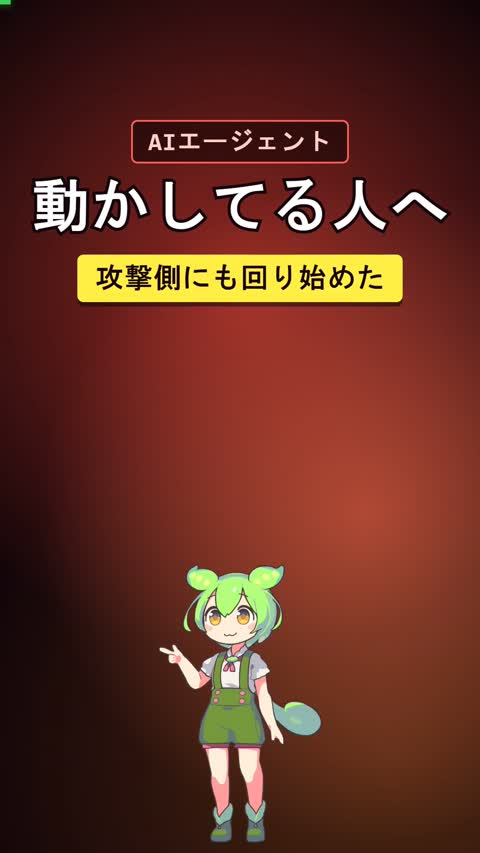
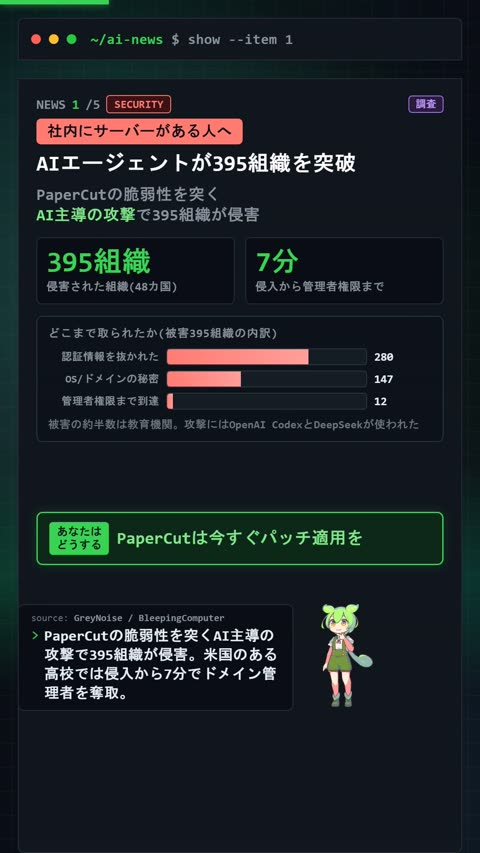
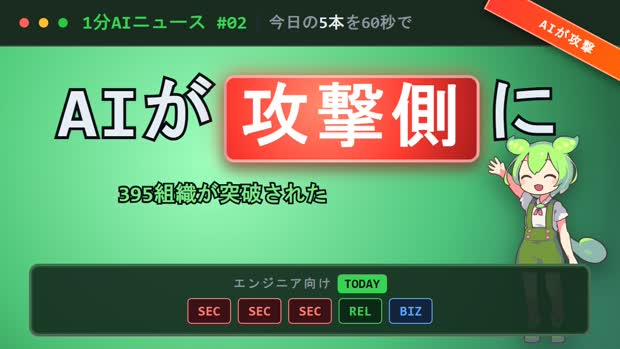
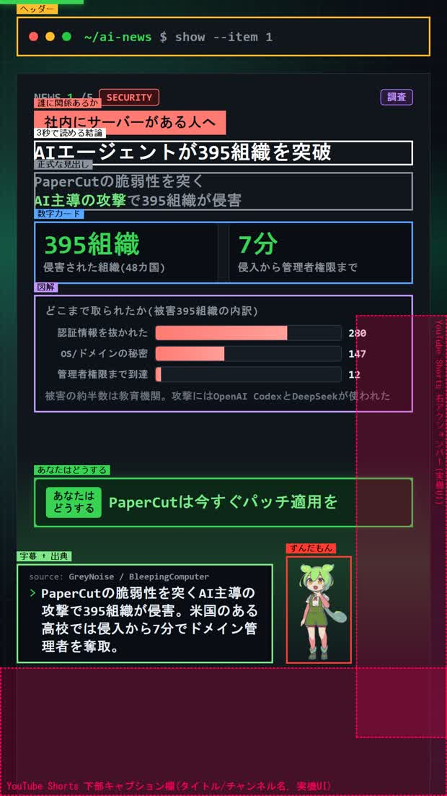
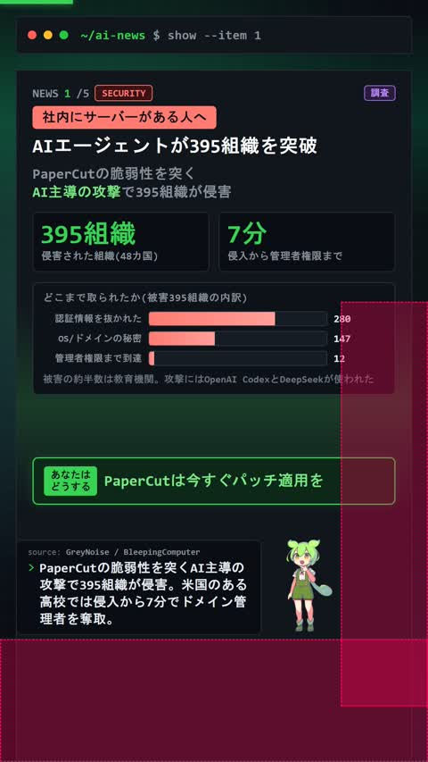

AIエージェントで1から作る — 1分AIニュース(YouTube Shorts)
ずんだもんが最新のAIニュースを5本、1分弱で読み上げるShortsシリーズを、 AIエージェント(Claude Code)と一緒に1から立ち上げました。 ニュースを集めるところから投稿までを6つの工程に分けた、その全体像です。 1本あたり約40分、費用はほぼゼロで回っています。
これが1本です。48〜58秒で、ニュース5本が流れます。



これが、上の1本ができるまでの全部です。 上の工程を直しても、下の工程は作り直さなくていいように切ってあります。
人間がやっているのは工程1だけです。 どのニュースを選ぶか、その数字は信用できるか。ここは任せていません。 残りの5工程は、指示を1つ出せばエージェントが最後まで走ります。
これだけです。ここから工程1〜6が最後まで走りました。
script.json)を生成 → 音声7本を合成 → 口パク生成 → BGMミックス →
1,763枚をレンダリングしてmp4化 → 品質ゲート8項目を測定 →
別エージェントで事実確認(1件の誤りを発見して修正・再レンダリング) →
横/縦サムネを生成 → YouTubeへ公開投稿 → 縦サムネをStudioで設定 →
再生リストに追加 → Xへ動画付きで投稿
途中で人間が止めたのは1回だけ、Xの投稿先アカウントの確認です (個人用とチャンネル用の2つがあるため)。それ以外は自走しています。
上のように1回で走るようになったのは、2本目からです。 1本目はパイプライン自体が無かったので、作りながら直していきました。 実際に打った指示と、その結果を順に並べます。
赤い番号が修正の指示です。6回ありました。 このうち3回は同じ指摘(2・3・4)で、原因が分かったのは 「実機と比べてテストして」と言われて測る仕組みを作ったときでした。
重要なのは、この6回の修正がそのまま検証スクリプトになったことです。 2本目以降は同じ指摘が出ません。機械が投稿前に見つけるからです。
ここで必ずやるのが一次ソースまで辿ることです。 まとめ記事の数字をそのまま使うと、後の工程で必ず事故ります (実際に1件ありました。工程5で書きます)。
選ぶ基準は「エンジニアの手が止まるか」です。#02では 「AIエージェントが攻撃に使われた」というテーマで5本を揃えました。 テーマが揃うと、1本目から5本目まで話がつながって離脱しにくくなります。
ここが、2本目以降を楽にする分かれ目でした。台本をHTMLに直接書くと、 内容を1文字変えるのに見た目も一緒に触ることになります。 そうではなく、1本のニュースが持つ情報を全部データとして宣言します。
最後の1つは細かいようで必須です。音声合成には「ペーパーカット」とカタカナで渡さないと 読みを間違えますが、画面には「PaperCut」と出したい。 1つの文で両方をまかなおうとすると必ず破綻します。
この形にしておくと、2本目はデータを差し替えるだけで作れます。 実際、#02の制作でHTMLやスクリプトには一切触っていません。
VOICEVOXで音声を合成します。1本あたり7行、合計1分弱です。 このとき、本文が変わっていない行は作り直しません。 本文のハッシュをファイル名に使い、同じものがあれば再利用します。
事実確認で1行だけ修正が入ったとき、再合成されたのは7本中1本だけでした。 台本の手直しが軽くなるので、推敲の回数が増えます。
口パクは、音の大きさ(音量の実効値)から開き具合を4段階で決めて、 フレーム単位の配列にしておきます。あとは画面側がその時刻の数字を見るだけです。
画面はHTML/CSSで作ります。動画編集ソフトは使いません。 ここでの判断が1つあって、CSSアニメーションを使わないことにしました。
代わりに「この時刻の画面はこうなる」という関数を1つ用意します。 レンダリングする側は、時刻を1/30秒ずつ進めながらスクリーンショットを撮り、 最後にffmpegでつなぐだけです。
この形にすると、3つ良いことがあります。
3つ目が、次の工程5で効いてきます。
画面がどう組まれているかは、ブラウザに座標を聞けば図にできます。 下は、実際の画面に各要素の枠と名前を重ねたものです。 この図自体も、スクリプトが自動で描いています(手で線を引いていません)。

ここがこの仕組みの中心です。詳しくは次の章に書きます。
YouTube Data APIで投稿し、横サムネイルを設定します。 Shorts用の縦サムネイルはAPIでは設定できないため、 ブラウザを自動操作してStudioの画面から設定しています。 そのあと再生リストに追加し、Xへ動画付きで投稿します。
AIエージェントは、自分が作った動画を見られません。 mp4を渡しても再生できないし、1,700枚のフレームを全部は確認できない。音は聞けない。
つまり「間延びしている」「字幕が読みにくい」という判断ができません。 人間が毎回見て毎回指摘するなら、自動化した意味がなくなります。
そして、人間の目視も当てになりませんでした。 「字幕とキャラクターが重なっている」という指摘を受けて直し、 フレームを何枚も並べて「解消した」と判断したのに、実機ではまだ重なっていた。
重なっていたのは動画の内部ではなく、YouTube Shorts再生画面のUI (右のいいね・コメント列、下のタイトル欄)との間でした。 静止画をいくら眺めても、そこにYouTubeのUIは写りません。

見落としたのは注意力の問題ではなく、見て判断していたこと自体が問題でした。
そこで、目で見ていた項目を片っ端から数値に置き換えました。
数値にした途端、目では見えていなかったものが出てきました。
実際に測ると、こう出ます。エージェントが読むのは、この最後の1行だけです。
$ python qc_video.py ep02
=== 品質ゲート（必須項目）===
尺 58.00s OK (Shorts上限60s)
解像度 1080x1920 OK
音声 48000Hz 2ch OK
音圧 LUFS -15.13 OK (-14±1.5)
ピーク dBTP -1.88 OK
冒頭0.5秒の輝度 61.0/255 OK (暗転していないか)
最長の静止 1.0s OK (3秒未満)
静止フレーム比率 6% OK (1/3未満)
判定: 全項目通過 — 投稿可数値になると、エージェントは自分で回して自分で直せます。 「静止率91%」と出れば、原因を探して直し、もう一度測って14%になったことを自分で確認できる。 人間の確認を待つ必要がありません。
数値で測れるのは形式だけです。書いてある内容が正しいかは測れません。
実際、危ないものが1件ありました。「中国の7つのラボがClaudeを蒸留、1.5億回」と書いていたのですが、 出典を確認すると1.51億回はそのうち1社の数値で、7社合計は約2億回でした。 嘘ではないのに、合計だと誤読される書き方です。
これは画面をどれだけ精密に測っても出てきません。 そこで別のAIエージェントに台本と出典URLを渡し、 「この数字は出典のどこに書いてあるか」を1件ずつ答えさせています。 書いた本人とは別の文脈で読ませる。それ以外に方法が思いつきませんでした。
| 工程 | 時間 | 備考 |
|---|---|---|
| 1. ニュース収集・選定 | 15〜20分 | 一次ソースの確認を含む。ここだけ人間 |
| 2. 台本作成 | 10分 | データを書き換えるだけ |
| 3. 音声合成〜ミックス | 3分 | 変更した行だけ再合成 |
| 4. レンダリング | 2分 | 1,700枚撮ってmp4化 |
| 5. 検証3種 + 事実確認 | 4分 | 事実確認は並列で走らせる |
| 6. 投稿・再生リスト・SNS | 5分 | |
| 合計 | 約40分 | うち人間の作業は20分弱 |
費用は、音声合成(VOICEVOX)が無料、レンダリングもローカルなので実質ゼロです。 X投稿のAPI利用料が1回$0.200かかる程度でした。
動画である必要はありません。スライドでも記事でもアプリ画面でも、同じ順番で組めます。
作り始める前に書きます。「良いもの」は定義しにくくても、「これは出せない」の線なら引けます。 最初は3つで十分です。私は尺・音圧・静止比率から始めました。
閾値に客観的な根拠は要りません。「静止率1/3未満」は、 過去の動画を見比べて「これ以上止まっていると自分なら飽きる」と感じた線を数字にしただけです。 大事なのは線が引かれていて、機械が毎回同じ厳しさで測れること。 間違っていたら後で動かせばいい。線が無いと、議論が毎回ゼロから始まります。
内容をJSONやdictに追い出します。判断基準は 「明日、内容だけ差し替えて2本目が作れるか」。 作れないなら、まだ表現の中に内容が埋まっています。
実時間で動かすと、検証のたびに結果が変わります。 時刻を引数で受ける形にすると、再現性と検証のしやすさが同時に手に入ります。
全項目を測って、最後に「全項目通過」か「不合格」の1行だけ出すようにします。 エージェントに渡すのはこのコマンドだけ。途中に判断を挟ませません。
「誇張がないか」ではなく「出典のどこに書いてあるか」を答えさせるのがコツです。
この5つを通すと、人間の仕事は「何を作るか」と「どこに線を引くか」だけになります。
「ちゃんとできているか」は、機械が毎回、同じ厳しさで見てくれます。
ここから先は、実装に興味がある人向けです。全体像だけ必要なら、ここで終わりです。
dict(
audience="社内にサーバーがある人へ", # 誰に関係あるか
summary="AIエージェントが395組織を突破", # 3秒で読める結論
figs=[{"n":"395組織","l":"侵害された組織(48カ国)"},
{"n":"7分","l":"侵入から管理者権限まで"}],
impact="PaperCutは今すぐパッチ適用を", # 読者がすべきこと
text="ペーパーカットの脆弱性を突く攻撃で…", # 読み上げ用(カタカナ)
caption="PaperCutの脆弱性を突くAI主導の攻撃で…", # 字幕用(正表記)
source_url="https://…", sourceType="調査",
)th = hashlib.sha1((ln["text"] + str(sid)).encode()).hexdigest()[:10]
f = AUD / f"l_{ln['idx']:03d}_{sp}_{th}.wav"
if f.exists():
sec = dur(f) # 本文が同じなら再利用
else:
vv(ln["text"], sid, f) # 変わった行だけ合成window.__setTime = function(t){
$("pbar").style.width = (Math.min(t/TOTAL,1)*100) + "%";
$("bgfx").style.transform =
"translate("+(Math.sin(t*0.42)*230)+"px,"+(Math.cos(t*0.31)*300)+"px)";
// この時刻に表示すべきものを全部決める
};for i in range(N):
pg.evaluate(f"window.__setTime({i/FPS:.4f})")
pg.screenshot(path=str(FR/f"f_{i:05d}.jpg"), type="jpeg", quality=88)def rects_overlap(a, b):
ox = min(a["right"], b["right"]) - max(a["left"], b["left"])
oy = min(a["bottom"], b["bottom"]) - max(a["top"], b["top"])
if ox > 0 and oy > 0:
return {"w": round(ox, 1), "h": round(oy, 1)}
return Noneこれを0.1秒刻みで全編に回します。1本500〜600回の判定が数十秒で終わり、出力は1行です。
ep02: 重なりなし(0.1秒刻み, 全587フレーム走査)# YouTube Shorts 実機UIの目安(1080x1920基準)
SAFE_RIGHT_W, SAFE_RIGHT_Y0, SAFE_RIGHT_Y1 = 220, 760, 1780 # 右のボタン列
SAFE_BOTTOM_H = 310 # 下のキャプション欄diffs = [float(np.abs(arrs[i]-arrs[i-1]).mean()/255*100)
for i in range(1, len(arrs))]
still_ratio = sum(1 for d in diffs if d < 0.5) / len(diffs)# requestfailed はネットワークエラーでしか発火しない(404は取れない)
pg.on("requestfailed", lambda r: fails.append(r.url))
# ステータスコードも見る
pg.on("response", lambda r: fails.append(r.url) if r.status >= 400 else None)TAIL = 0.7 # 最後の声にぴったり合わせると末尾が切れる
total += TAILここまでの内容で、同じ構造を自分の題材で組み直すことはできます。 一方で、実際に動かすところまでには、記事に書ききれない細かい部分が残ります。 VOICEVOXの読み間違いの潰し方、口パクの閾値、BGMのダッキング設定、 YouTube APIの認証まわり、サムネの輝度調整といった、 「動くまでにハマる場所」です。
そこを含めた実行可能な一式を、別途配布する予定です。
| 含まれるもの | 中身 |
|---|---|
| パイプライン本体 | 台本生成・音声合成・口パク・ミックス・レンダリング(13スクリプト) |
| 画面テンプレート | 本編テンプレートと図解5種、横/縦サムネのテンプレート |
| 検証スクリプト | 品質ゲート・要素の重なり判定・実機UIセーフゾーン判定・レイアウト診断図 |
| 配信スクリプト | YouTube投稿・再生リスト・縦サムネ設定・X投稿 |
| Claude Code スキル | この手順をエージェントに実行させるための SKILL.md 一式 |
| セットアップ手順 | VOICEVOX / Playwright / ffmpeg / API認証の導入手順 |